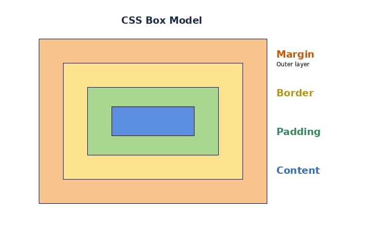

اسم الطالبة: اميره صابر السيد محمد
الرقم الجامعي: 2501562
الفرقة: الثانية - 2025-2026
تعتبر لغة Cascading Style Sheets (CSS) حجر الأساس في تصميم وتنسيق صفحات الويب. فهي تتيح للمطورين التحكم الكامل في المظهر الخارجي للمواقع، بما يشمل الألوان، الخطوط، وتوزيع العناصر على الشاشة. ولا تقتصر أهميتها على الشكل الجمالي فقط، بل تلعب دورا حيويا في تحسين تجربة المستخدم وضمان توافق الموقع مع مختلف الشاشات والأجهزة الذكية. كما يتم من خلال هذه اللغة تحقيق مبدأ الفصل التام بين هيكل المحتوى وتصميمه البصري، مما يسهل عملية صيانة المواقع وتحديثها بشكل مستمر.
في ظل التطور الرقمي الحالي، لم يعد تصميم الويب مقتصرا على النصوص الثابتة، بل أصبح يعتمد على واجهات تفاعلية وديناميكية تتطلب فهما عميقا لأدوات التنسيق الحديثة.
تعتمد لغة CSS على ثلاث ركائز أساسية في عملها: المنسقات (Selectors)، الخصائص (Properties)، والقيم (Values). تُستخدم المنسقات لتحديد العنصر المراد تعديله في صفحة الـ HTML، مثل الفقرات أو العناوين. أما الخصائص، فهي السمة المطلوبة تغييرها، مثل اللون أو حجم الخط. وأخيرا، القيم هي التفاصيل المحددة للخاصية.
لتطبيق هذه القواعد، نقوم بكتابة الكود في ملف التصميم داخل أقواس متعرجة. على سبيل المثال، لتغيير لون الفقرة، نختار الواسم (p)، ثم نضيف الخاصية (color) ونحدد القيمة المطلوبة. وهناك طرق مختلفة لإدراج هذه التنسيقات، مثل الربط بملف خارجي (External CSS) وهو الأفضل للمشاريع الكبيرة، أو الكتابة مباشرة داخل ملف الـ HTML.
يمثل نموذج الصندوق الهيكل الأساسي الذي تُبنى عليه كافة عناصر الويب، حيث يُعامل كل عنصر في الصفحة كصندوق مستطيل يحتوي على المحتوى. تتكون أبعاد هذا الصندوق من أربع طبقات متداخلة تضمن التباعد والتنظيم:
المحتوى (Content): وهو جوهر العنصر الذي يضم النص أو الصور.
1- البطانة (Padding): وهي مساحة شفافة تحيط بالمحتوى وتفصله عن الإطار.
2- الإطار (Border): وهو الخط أو النمط الذي يحيط بالبطانة والمحتوى، ويمكن التحكم في سمكه ولونه وشكله.
3- الهامش (Margin): وهو مساحة خارجية شفافة تفصل الصندوق عن العناصر المجاورة له، مما يمنع التكدس ويخلق فراغات بصرية مريحة.

صُمم هذا النظام لتوزيع المساحات وترتيب العناصر داخل حاوية واحدة بمرونة فائقة، خاصة عند التعامل مع أبعاد متغيرة. يعمل Flexbox عبر محورين أساسيين (الرئيسي والمتقاطع)، مما يسمح للعناصر بالتمدد لملء المساحة المتاحة أو الانكماش لمنع التداخل.
يُعد الحل الأكثر قوة لتخطيط الصفحات المعقدة ذات البعدين (صفوف وأعمدة). يتيح Grid تقسيم مساحة الصفحة إلى شبكة منظمة، حيث يمكن للمطورين وضع العناصر في خلايا محددة بدقة عالية، والتحكم في أحجام المسارات (Tracks) والمناطق (Areas).
| وجه المقارنة | Flexbox | CSS Grid |
|---|---|---|
| الاتجاه | بعد واحد (صف أو عمود) | بعدين (صفوف وأعمدة معا) |
| الاستخدام | توزيع عناصر داخل حاوية | بناء هيكل الصفحة الكامل |
| المحاذاة | سهلة جدا عموديا وأفقيا | تحكم دقيق في الخلايا |
تعتبر ميديا كويريز (Media Queries) أداة أساسية لجعل الموقع متجاوبا في عصر الهواتف الذكية. فهي تسمح للمطور بتطبيق تنسيقات مختلفة بناء على حجم الشاشة أو نوع الجهاز. على سبيل المثال، يمكننا تغيير حجم الخط أو تحويل تخطيط الموقع من عدة أعمدة إلى عمود واحد عندما يتم تصفح الموقع من الهاتف.
يضمن هذا النهج تقديم تجربة تصفح مثالية وسلسة للمستخدمين بغض النظر عن الأجهزة المستخدمة للوصول إلى المحتوى.